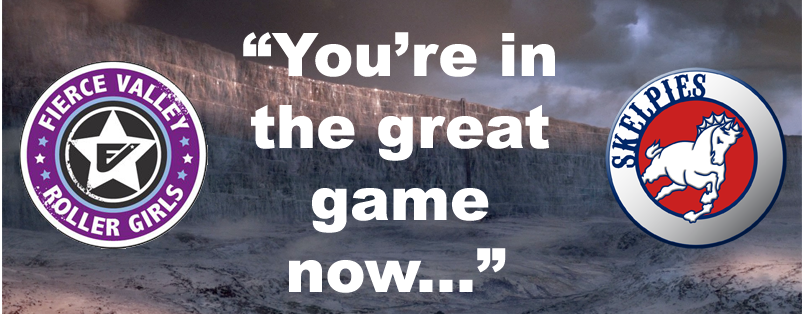

Rematch Central on the 20th
As we mentioned last week (with a quick discussion of how to make the most of it), this weekend is chock-a-block with roller derby.

Over to the West, Glasgow Roller Derby are back with another hosted Vagine Regime game, this time seeing VR UK take on the mighty meat-free Soy Division. First up, though, you can see Science take on Magic in the B bout. As is often the case for Glasgow-based bouts, Glasgow Caledonian University's ARC is the host venue, and doors open at 12:45 . The event page is here: https://www.facebook.com/events/550878811750965/
Tickets are just £8 in advance (only £4 a bout) from the GRD website here.
As is now traditional for GRD, the action will continue into the evening, as the league hosts its fourth Queerosity afterparty, at the Garnethill Multicultural Centre, from 19:30 (and a very affordable £3 entry fee, free for refugees and asylum seekers!). https://www.facebook.com/events/280439012320842/
And for those who've been inspired by all of this and are feeling up to it the day after, GRD's next intake day is on Sunday afternoon, also at the ARC (starting at 1pm). https://www.facebook.com/events/311795079209622/
Meanwhile, across in Grangemouth, the busiest location for Roller Derby in Scotland, the Central Belt's Fierce Valley Roller Girls and Bairn City Rollers have joined forces for the first time in hosting a double-header of their own. First, Fierce Valley will be playing a Game of Thrones (in fact, defense of the Wall) themed intraleague.

The real grudge match will be the second game, as BCR's men's team the Skelpies take on Tyne And Fear B, the Inglorious BStars in a rematch from last year. With several Skelpies featuring in Power of Scotland, and Tyne and Fear (A) no stranger to various national teams, this should be an intense display of Men's Roller Derby, made more so by the fact that the BStars were the last team to beat the Skelpies in a public game.
The day in Grangemouth kicks off at 3pm. https://www.facebook.com/events/972951379480637/
For this double header, the price is a mere £5 in advance, from Brown Paper Tickets, or £7 on the door!